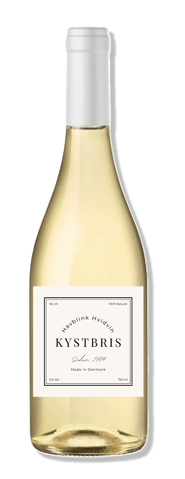
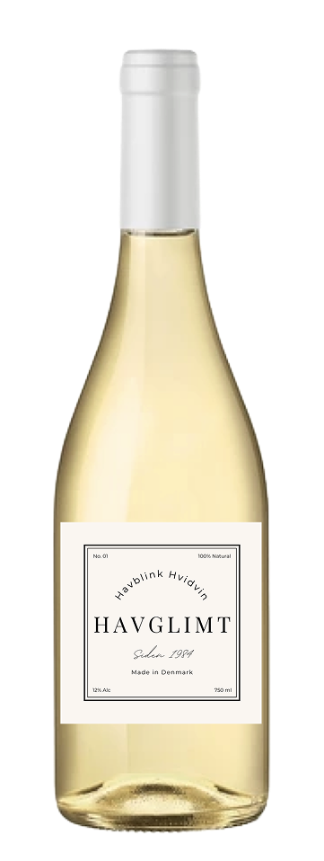

Hver vin fortæller en historie om det sydfynske klima, modne druer og håndværk i særklasse. Oplev vores udvalg og find din favorit.
MEST POPULÆR

KØB NU >
KYSTBRIS
En frisk og let hvidvin med noter af grønne æbler, citrus og hvide blomster. Perfekt til skaldyr eller som aperitif på en solrig dag ved vandet.
PRIS: 199 kr.
VORES SIGNATURVIN
SYDFYNS SOL
En rund og frugtig vin med smag af modne pærer, honningmelon og et strejf af vanilje. Lagret på egetræ for ekstra dybde – skabt til at nyde i ro og mag.
PRIS: 225 kr.
TIL VINELSKEREN

KØB NU >
HAVGLIMT
Elegant og mineralsk med fine nuancer af stikkelsbær og lime. En vin med karakter og friskhed, der afspejler det særlige sydfynske terroir.
PRIS: 250 kr.